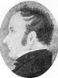
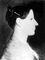

|
John Fielding
Born 4 JUL 1791 Halifax,Yorkshire,England
Died 21 NOV 1839 Manor Farm,Gravely,Cambridge,England
Married
Ann Osborne 1813
The 1st child of John Fielding and Rachel Ibbotson
|
|
James Fielding
Born 7 APR 1793 Halifax,Yorkshire,England
Died 7 DEC 1877
Married
Sarah Ann Fothergill 1818 So Parade Chaple,Halifax,Yorkshire,England
The 2nd child of John Fielding and Rachel Ibbotson
|
|
Thomas Fielding
Born 12 JUN 1795 Honiden,Bedfordshire,England
Died 17 DEC 1882
Married
Hannah Boot 24 DEC 1823 Eaton Socon,Bedfordshire,England
The 3th child of John Fielding and Rachel Ibbotson
|
1 2 2 |
Joseph Fielding 
Born 26 MAR 1797 Honiden,Bedfordshire,England
Died 19 DEC 1863 Salt Lake City,Salt Lake,Utah,USA
Married
Hannah Greenwood 11 JUN 1838 Preston,Lancashire,England
Married
Mary Ann Peake 23 JAN 1846 Nauvoo,Hancock,Illinois,USA
The 4th child of John Fielding and Rachel Ibbotson
|
|
Ann Fielding
Born 15 APR 1799 Honiden,Bedfordshire,England
Died 16 NOV 1884 Beverley,Yorkshire,England
Married
Timothy Richard Matthews 12 JAN 1821 Colmworth,Bedfordshire,England
The 5th child of John Fielding and Rachel Ibbotson
|
12 |
Mary Fielding
Born 21 JUL 1801 Honiden,Bedfordshire,England
Died 21 SEP 1852 Salt Lake City,Salt Lake,Utah,USA
Married
Hyrum Smith 24 DEC 1837 Kirtland,Cuyahoga,Ohio,USA
Married
Heber Chase Kimball 14 SEP 1844
The 6th child of John Fielding and Rachel Ibbotson
|
|
Martha Ibbotson Fielding
Born 15 SEP 1803 Honiden,Bedfordshire,England
Died 17 JUN 1872 Honiden,Bedfordshire,England
Married
Peter Isaac Watson 1823 Honiden,Bedfordshire,England
The 7th child of John Fielding and Rachel Ibbotson
|
* |
Benjamin Fielding
Born 15 MAR 1805 Honiden,Bedfordshire,England
Died 29 JAN 1807
The 8th child of John Fielding and Rachel Ibbotson
|
|
Mercy Rachel Fielding
Born 15 JUN 1807 Honiden,Bedfordshire,England
Died 15 SEP 1893 Salt Lake City,Salt Lake,Utah,USA
Married
Robert Blashel Thompson 4 JUN 1837 Kirtland,Cuyahoga,Ohio,USA
The 9th child of John Fielding and Rachel Ibbotson
|
* |
Josiah Fielding
Born 1809 Honiden,Bedfordshire,England
Died 1809 Honiden,Bedfordshire,England
The 10th child of John Fielding and Rachel Ibbotson
|

 symbol is a link to a history, and the chart
symbol is a link to a history, and the chart